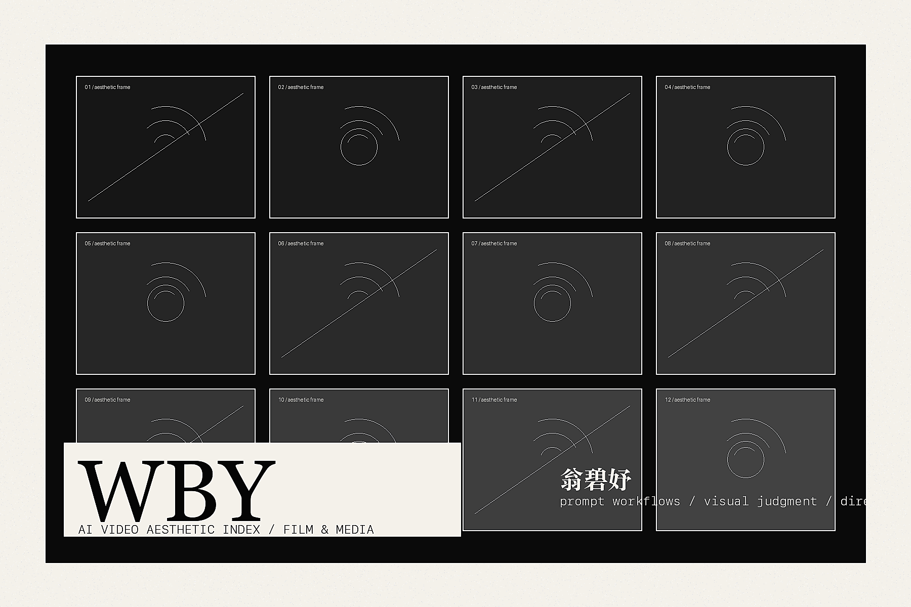

AI 视频审美评测
覆盖人物、场景、构图、光影、风格一致性等维度，参与可灵基础模型升级迭代相关评测工作。
Portfolio / Resume 2026
AI Video Aesthetic Evaluator Content Creator Film & Media Researcher
关注 AI 视频生成的审美评测、Prompt 工作流、影视叙事与内容传播。

从测试 Agent、Prompt 模板、风格一致性评测，到短视频导演、电影节物料与内容运营， 个人经历围绕“影像如何被生成、判断、包装和传播”展开。
覆盖人物、场景、构图、光影、风格一致性等维度，参与可灵基础模型升级迭代相关评测工作。
梳理测试任务流与 Prompt 模板，搭建 t2va 场景化、t2va 风格化、i2va 风格化专项测试 Agent。
具备分镜、勘景、拍摄、剪辑、封面设计和短视频导演经验，能从脚本推进到成片发布。
广播电视与新媒体背景，电影阅片量超 1000 部，具备影视审美、剧作与内容传播判断。
按最近经历排序，重点呈现 AIGC 评测、产品运营、视频制作与传播成果。
搭建专项测试 Agent，梳理测试任务流与 Prompt 模板，覆盖人物、场景、构图、光影、 风格一致性等核心维度，为可灵基础模型升级迭代提供测试集构建支持。
调研海外竞品社媒宣传风格，参与 Dzine AI 新功能与模型上新宣传片、宣传物料制作。
根据文案脚本与实拍可行性搭建分镜头脚本，前往客户所在地勘景拍摄，并独立完成视频包装剪辑。
结合吴江文化和剧综内容，每日独立策划选题、拍摄素材并当天产出 4 个视频， 为长综艺上播前制造热度和话题。
挖掘肇庆周边三农题材，负责从策划到视频制作的完整内容链路，输出多个农产品题材短视频。
参与开拓“丁香同事日常”系列视频，制作 50+ 个视频，推动专业医学内容以更具网感的形式传播。
电影节、青年创作训练营与校园媒体项目构成了审美判断和内容执行的底层训练。
原创部成员。联系高校和展映分会场，评审“原创影片”单元投稿作品， 设计原创影片展映会场物料，并撰写原创展映活动回顾推文。
通过高校邀请选拔进入青创营，参与 4 天创作训练课程， 与导演、编剧及电影行业从业者进行创作交流。
视频部成员。策划与拍摄微电影《绩点为王》，独立策划访谈节目《从前慢》， 发布于校内媒体公众号。
戏剧与影视-广播电视与新媒体，全日制研究生
传播学理论 / 影视史论 / 剧本创作 / 电影节运营和管理广播电视学，全日制本科
媒体技术基础 / 网络视觉设计 / 摄影基础 / 信息图表设计ChatGPT、豆包、AI Agent、Prompt 优化、Nano Banana
Photoshop、Premiere Pro、Adobe Illustrator、剪映、可画、秀米
剧本写作、分镜、导演、视频包装
CET6，英语阅读与写作；1000+ 电影阅片量与影视解析能力
OC 一周到岗，周出勤 5 天，实习 4 个月以上。